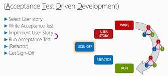

Aktsepteerimistestipõhine arendus

Aktsepteerimistestipõhine arendus (ATDD) on arendusmetoodika, mis põhineb äriklientide, arendajate ja testijate vahelisel suhtlusel.
ATDD hõlmab paljusid samu tavasid nagu spetsifikatsioon näitepõhiselt (SBE), käitumispõhist arendust (BDD), näitepõhist arendust (EDD) ja tugipõhist arendust, mida nimetatakse ka lugu testipõhine arendus (SDD).
Kõik need protsessid aitavad arendajatel ja testijatel enne juurutamist mõista kliendi vajadusi ja võimaldavad klientidel vestelda oma domeenikeeles.
ATDD on tihedalt seotud testipõhise arendusega (TDD).See erineb selle poolest, et rõhuasetus on arendaja, testija ja ärikliendi koostööl.
ATDD hõlmab aktsepteerimistesti, kuid tõstab esile vastuvõtutestide kirjutamise enne, kui arendajad hakkavad kodeerima.
Pros:
-
Lihtsustab rakenduste testimist: ATDD muudab rakenduste testimise lihtsamaks, kuna rakendus loodud vastuvõtutestide abil kipub olema kasutajasõbralikum ning klientide vajadustele vastavam.
-
Keskendumine kasutajakogemusele: ATDD keskendub kasutajakogemusele, mõeldes sellele enne funktsionaalsust, mis võib viia kasutajasõbralikumate ja efektiivsemate rakenduste loomiseni.
-
Selge eesmärk meeskonnale: ATDD puhul on meeskonnal selge eesmärk, mis on testi läbimine, mis võimaldab rohkem keskenduda ja tõhusamalt töötada.
-
Parema silla loomine ettevõtte ja arendusmeeskonna vahel: ATDD seab selged eesmärgid ja standardid, luues parema sideme ettevõtte ja arendusmeeskonna vahel.
Cons:
-
Automatiseeritud testide probleemid: Paljud arendajad kasutavad automatiseeritud vastuvõtuteste, mis võib põhjustada probleeme arendusprotsessis, eriti kui testimine ei ole korralikult läbi mõeldud või automatiseeritud testid on ebatäpsed.
-
Raskused pärandkoodile rakendamisel: Nagu TDD puhul, on ka ATDD-d raske rakendada pärandkoodile, mis võib piirata selle kasutamist teatud juhtudel või nõuda suuremat ümberkujundamist.
-
Sobib paremini rakenduse käivitusfaasis: ATDD sobib paremini kasutamiseks rakenduse käivitusfaasis, mis võib tähendada, et seda ei pruugita alati optimaalselt rakendada kogu arendusprotsessi jooksul.